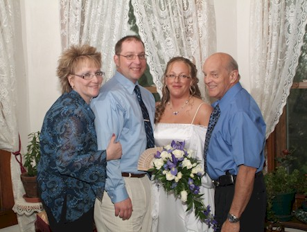
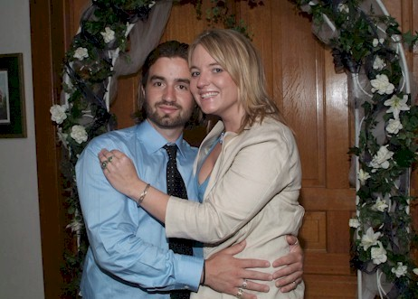

BHS 1967 Class Member
Tom Long
 1967 Click for Franklin Elementary Photo In Memory (August 13, 2015) (Obituary) |
|
|  2009 - wife Mary, son Ryan, daughter-in-law Erica, me |
 2009 - son-in-law Micaha, daughter Kristi |
| 1967 Click for Franklin Elementary Photo In Memory (August 13, 2015) (Obituary) |
|
|  2009 - wife Mary, son Ryan, daughter-in-law Erica, me |
 2009 - son-in-law Micaha, daughter Kristi |